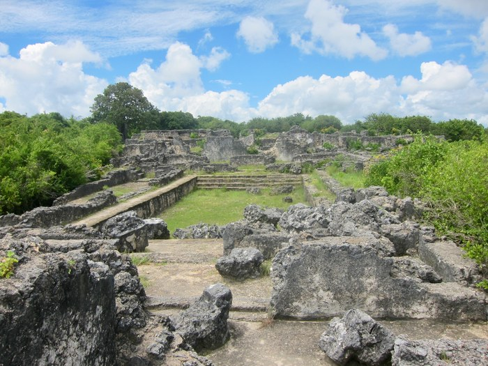

THE STANDARD WEIGHT
He built the richest port of the Indian Ocean on the principle that everything has a price and the price must be spoken aloud — and Heaven, which witnesses all vows, has been keeping his books ever since.

THE STANDARD WEIGHT
He built the richest port of the Indian Ocean on the principle that everything has a price and the price must be spoken aloud — and Heaven, which witnesses all vows, has been keeping his books ever since.
Feature map
Level-by-level features, as the figure refined them.
Quote the Price
Reaction · 1 CE.
Tier IV · Appraisal controller · Suggested CE ability: INT (appraisal) / CHA (declaration) · Primary verb: Price. The customs house, perfected. Observed techniques, priced aloud — Heaven makes the speaking true. Technique DC = 8 + proficiency bonus + the relevant CE ability modifier (INT for appraisal, CHA for declaration). Appraisal (INT): Quote the Price, Upkeep Called Due. Declaration (CHA): The Audit, Margin Call, the Maximum (invented tagging). Assessed. A creature al-Hasan has Quoted becomes Assessed for 1 minute (no save — information, freely given, Heaven-witnessed). While Assessed, al-Hasan and his allies know the CE cost, upkeep, and hidden riders of every feature the creature uses; the creature cannot conceal these costs short of a Domain. Re-Quote to extend.
When a creature he can see within 60 ft activates a feature or casts a spell, he speaks its true cost aloud — in Swahili, like a harbor bell. He and allies within 60 ft learn its CE cost, upkeep, and hidden riders. The user becomes Assessed. (The customs bell, rung.)
The Grain-Weight
Passive.
No creature can lie to him about a price, cost, or value — advantage on Insight vs. Deception concerning value or terms; magical concealment of prices fails against him. His vow holds his own tongue: he cannot speak a false price. (The customs man is himself inspected.)
Upkeep Called Due
Action · 3 CE.
One Assessed creature within 60 ft immediately pays the upkeep of every sustained feature or spell it maintains — CE spent on the spot — or each unpaid working lapses (the target chooses what to pay for). Willing-decline: drop the cargo, keep the ship. (The audit invoices; it does not seize.)
The Mint's Hand
Passive.
Al-Hasan carries the Kilwa Mint's circulating stock (nineteen coins in the strongbox; eleven in circulation, per the Module 58 catalog). As an action (2 CE), he may present one coin against a named Heaven-witnessed debt within 60 ft: if the coin's standard (~1,000 gp of obligation) covers it, the debt closes, Heaven-witnessed; if it exceeds the coin, the exact remainder becomes legible to him. Either party may refuse before presentation — after, there is no refusal. Spent coins vanish into circulation. (Pays what it says.)
The Audit
Action · 5 CE · 1 minute (concentration).
His harbor extends 30 ft. Every feature or spell activated inside is declared — full cost spoken aloud, user Assessed, the bell ringing itself. Assessed creatures activating inside must make a Charisma save against his technique DC or pay +2 CE (Heaven's commission, on the spot). (No smugglers in the harbor.)
Margin Call
Action · 7 CE · once per long rest.
He names one Assessed creature within 60 ft and calls every account due: Charisma save against his technique DC or take 6d10 psychic damage (Heaven's bill, itemized) and have one sustained feature of his choice suppressed until the end of its next turn. Success: half damage, no suppression. (No extensions.)
Maximum, Domain, or equivalent.
Capstone material.
Maximum: THE MARKET CLOSES
Assessment becomes enforcement: each Assessed creature within 60 ft pays 2 CE per activation — Heaven collects on the spot — or the activation fails (the creature may simply decline to activate). Creatures that cannot pay cannot throw. (No credit.)
Husuni Kubwa: The Counting-House
The palace at dusk: the audience hall, the customs tables, the harbor below. The sure-hit is Everything Is Priced — at initiative 20, the ledgers are balanced: each hostile inside becomes Assessed (no save; though a creature may take 3d10 force damage to seal its ledgers and refuse assessment until the next initiative 20 — a willing-decline Heaven honors). Hostiles activating technique features inside pay +2 CE per activation, on the spot. (No hidden costs. Only the invoice.)
- Clash points
- 800
- Burnout
- 5 rounds
- Duration
- 2 minutes
- Radius
- 50-ft radius
- Activation ✦
- full-turn action
- CE cost ✦
- 20
✦ Canon: figure Domains are Specific Domains — the stated profile governs, not the player point-unlock table.
The Standard
For 1 minute, allies' features and spells cost 1 less CE (minimum 1) and enemies' cost 2 more CE — Heaven holds the weights, and the weights are his. Alternatively, he spends the minute striking: one new Kilwa coin, Heaven-witnessed, into the strongbox. (The standard is alive.)
Build-defining options.
This technique grants Innate Technique Feats — hand-authored applications of the figure's art, available in the builder's feat picker when you select this technique.
Edge cases and shared systems.
Campaign canon notes